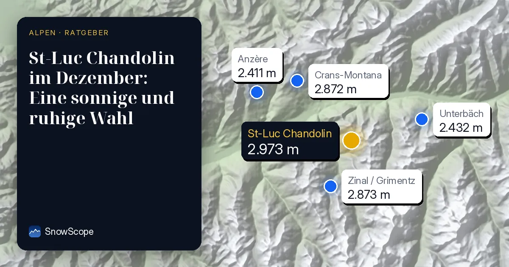

St-Luc Chandolin im Dezember: Eine sonnige und ruhige Wahl
St-Luc Chandolin ist ein friedliches Ziel für einen Winterausflug im Val d'Anniviers. Es bietet eine entspannte Atmosphäre und sehr zuverlässigen Schnee in großen Höhen für eine Reise im Dezember.
Die Live-Schneeprognose für St-Luc Chandolin in der SnowScope-AppSchneehöhen, Pulverschnee-Alarme und 3D-Karte, gratis.
Ein sonniger Balkon in den Bergen
St-Luc Chandolin ist ein Ort, an dem du wirklich entschleunigen und die Berge genießen kannst. Das markierte Skigebiet hat 56 km Pisten und 18 markierte Lifte. Das bietet viel Abwechslung für eine ruhige Woche voller Entdeckungen. Es ist ein sonniger Ort in der Region Wallis. Die Leute nennen es oft einen Balkon, weil es hoch über dem Talboden liegt.
Der unterste Lift startet auf 1.682 m, der höchste führt auf 2.973 m, also 1.291 m Höhenunterschied. Das Gebiet ist kleiner als die berühmten Walliser Namen, und genau deshalb passt es zu einem Paar, das eine ruhige Woche sucht.

Was dich beim Schnee im Dezember erwartet
Wir haben uns unsere Schneehistorie aus 46 vergangenen Wintern genau angesehen, um zu sehen, wie der Dezember normalerweise aussieht. An der Spitze der Lifte, die auf 2.973 m Höhe liegt, beträgt die übliche Dezembertiefe 110 cm. Das ist sehr zuverlässig für das Skifahren zu Saisonbeginn. Tatsächlich hatte der Gipfel zwischen dem 15.-21. Dezember und dem 22.-28. Dezember in 100 % der vergangenen Winter 30 cm oder mehr.
Die mittlere Höhe auf 2.327 m ist ebenfalls sehr beständig. Die übliche Dezembertiefe liegt dort bei 57 cm. Allerdings kann der untere Bereich der Lifte auf 1.682 m Anfang des Monats etwas dünner sein. Die übliche Tiefe an der Basis beträgt für den gesamten Dezember 38 cm. In einem schneearmen Winter, der etwa in 1 von 10 Wintern vorkommt, kann die Basistiefe unter 18 cm liegen. Wenn du mehr Schnee an der Basis möchtest, steigt der Anteil der Winter mit 30 cm oder mehr von 41 % in der ersten Dezemberwoche auf 85 % in der letzten Woche. Für diejenigen, die tieferen Schnee suchen, bietet die mittlere Höhe in 78 % der Winter während der letzten Woche des Monats 50 cm oder mehr.
Die Urlaubskosten prüfen
Eine Reise in die Schweiz zu planen kann teuer sein, aber dieses Gebiet fühlt sich wie ein besseres Angebot an als die großen Namen. Wir haben die offizielle Seite für die Preise im Winter 2026-27 geprüft, um sicherzugehen. Ein Erwachsenen-Tagespass für das Val d'Anniviers kostet CHF 75,00. Dieser Pass ist ziemlich flexibel, da er St-Luc Chandolin, Grimentz-Zinal und Vercorin abdeckt.
Für eine ganze Woche kostet der 6-Tage-Pass Val d'Anniviers für Erwachsene CHF 339,00. Ein Pass für das ganze Tal macht es leicht, das Gebiet zu wechseln, wenn du eine andere Aussicht willst.
Vergleich mit Grimentz-Zinal
Es ist hilfreich, diesen Ort mit seinem Nachbarn, Grimentz-Zinal, zu vergleichen. Dieser Ort ist etwas größer. Das markierte Skigebiet dort hat 71 km Pisten und 23 markierte Lifte. Grimentz-Zinal hat eine tiefere Basis auf 1.552 m, wo die übliche Dezembertiefe 27 cm beträgt. Das ist weniger als die üblichen 38 cm Tiefe an der Basis von St-Luc Chandolin auf 1.682 m.
An der Spitze der Lifte erreicht Grimentz-Zinal 2.873 m mit einer üblichen Tiefe von 99 cm. St-Luc Chandolin ist mit 2.973 m höher und hat normalerweise mehr Schnee an der Spitze mit 110 cm. Grimentz-Zinal bietet einen etwas größeren Höhenunterschied von 1.321 m im Vergleich zu 1.291 m hier. Beide Orte teilen sich die gleichen Liftpasspreise. Deine Wahl hängt davon ab, ob du die zusätzlichen Pisten von Grimentz-Zinal oder die höheren und sonnigeren Pisten von St-Luc Chandolin möchtest.
Ein stabiler Trend für die Zukunft
Eine Sache, die wir in unserer Schneehistorie interessant fanden, ist, wie beständig der Schnee war. Auf der mittleren Höhe von 2.327 m lag die durchschnittliche Tiefe im Dezember während der ersten 15 Winter von 1980-81 bis 1994-95 bei 54 cm. In den letzten 15 Wintern von 2011-12 bis 2025-26 war der Durchschnitt mit 54 cm exakt gleich. Dieser flache Trend ist sehr beruhigend für die Reiseplanung. Selbst an der Basis auf 1.682 m lag der Durchschnitt sowohl in den ersten 15 als auch in den letzten 15 Wintern bei 38 cm. An der Spitze ging der Durchschnitt von 111 cm im ersten Zeitraum auf 99 cm im letzten Zeitraum zurück.
Momentan beginnt die Saison gerade erst. Am 13. November 2026 beträgt die Schneehöhe 0 cm an der Basis und 5 cm auf mittlerer Höhe. An der Spitze sind es 1 cm. Der Zwei-Wochen-Ausblick für die mittlere Höhe und darüber zeigt einen Bereich von 60 cm bis 104 cm Neuschnee. Das ist ein vielversprechender Start für den kommenden Monat.
Tipps für Skifahrer
- Ziele auf die Woche vom 22.-28. Dezember ab, wenn du die besten Chancen auf Schnee an der Basis haben möchtest, da es dort in 85 % der vergangenen Winter 30 cm oder mehr gab.
- Verbringe die meiste Zeit oberhalb der mittleren Höhe von 2.327 m, wo die übliche Dezembertiefe 57 cm beträgt.
- Prüfe immer den Lawinenlagebericht, bevor du daran denkst, die markierten Pisten zu verlassen.
- Kaufe deinen 6-Tage-Pass für Erwachsene im Val d'Anniviers für CHF 339,00 auf der offiziellen Seite, um das ganze Tal abzudecken.
- Suche nach dem tiefsten Schnee an der Spitze der Lifte auf 2.973 m, wo die übliche Tiefe am 15. Dezember 109 cm beträgt.
Weitere Karten (externe Seiten)
Quellen und Nachweise
- Val d'Anniviers tourism, official ski pass prices 2026-27 www.valdanniviers.ch/fr/Z33617/tarifs-ski-grimentz-zinal
- SnowScope, December snow at three heights and today's snow map snowscope.app/
Zu diesen Zahlen
Schneewerte: SnowScope-Schneehistorie, 46 vergangene Winter (1980-81 bis 2025-26) auf drei Höhen jedes Skigebiets (ein höhenkorrigiertes Modell der Vergangenheit: eine Schätzung für eine Fläche, keine Messungen des Skigebiets); Dezemberwerte aus den täglichen Schneehöhen dieser Winter. Aktueller Schnee und Zwei-Wochen-Ausblick: SnowScope-Prognosen (Ausblick aus ECMWF und GFS, eine Spanne, kein Versprechen). Lifte und Pisten: OpenSkiMap-Kartierung. Preise: die offiziellen Seiten unten, gelesen am 2026-11-13; Preise können sich ändern, vor der Buchung prüfen.
Offizielle Lawinenlageberichte: SLF – WSL Institute for Snow and Avalanche Research
Diesen Bericht zitieren
Für Forschung, Lehre oder Presse: Zahlen und Grafiken sind unter CC BY 4.0 mit dieser Quellenangabe frei nutzbar.
SnowScope (2026), St-Luc Chandolin im Dezember: Eine sonnige und ruhige Wahl, https://snowscope.app/blog/de/2026/11/st-luc-chandolin-december-ski-quiet-value-valais-2026.html, abgerufen am 2026-11-14
SnowScope (Atlas Labs). (2026, November 14). St-Luc Chandolin im Dezember: Eine sonnige und ruhige Wahl. SnowScope snow reports. https://snowscope.app/blog/de/2026/11/st-luc-chandolin-december-ski-quiet-value-valais-2026.html
BibTeX
@misc{snowscope2026stlucchandolindecembersk,
author = {{SnowScope (Atlas Labs)}},
title = {St-Luc Chandolin im Dezember: Eine sonnige und ruhige Wahl},
year = {2026},
month = nov,
howpublished = {\url{https://snowscope.app/blog/de/2026/11/st-luc-chandolin-december-ski-quiet-value-valais-2026.html}},
note = {Published 2026-11-14 13:29 UTC; accessed 2026-11-14}
}· CC BY 4.0 · Methoden, Daten und Werkzeuge →
St-Luc Chandolin: Schnee und Temperatur nach Höhe, dieser Winter vs letzter (Werkzeuge) →
St-Luc Chandolin folgen
Gratis: eine Nachricht, wenn Neuschnee kommt, und jeden Morgen die Vorhersage.
Weitere Schneeberichte

Wann Courchevel und die 3 Vallées buchen, welches Dorf wählen und wo der Schnee hält, geplant aus 46 vergangenen Wintern.

Cortina d'Ampezzo auf drei Arten: Tofana, Faloria-Cristallo und Cinque Torri-Lagazuoi, mit 46 Wintern Schneedaten auf drei Höhen.

Unsere 46-Winter-Reihe in den Alpen, 108 Punkte von 667 bis 3.872 m: überall weniger Schneetage, deutlich an 81 %. Was sich je Höhe änderte und warum.